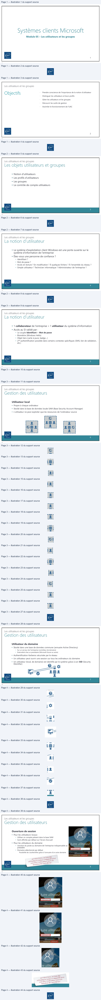
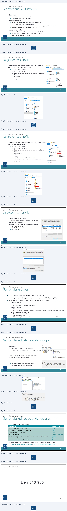
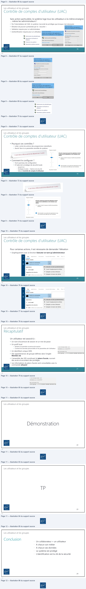

Transcription du document du Drive TSSR. La mise en forme est adaptée au Web ; les compléments IA du portail sont présentés séparément.
Module 05 – Les utilisateurs et les groupes
1
1
Les utilisateurs et les groupes
•
Prendre conscience de l'importance de la notion d'utilisateur
•
Distinguer les utilisateurs et leurs profils
•
Gérer les utilisateurs et les groupes
•
Découvrir les outils de gestion
•
Assimiler le fonctionnement de l'UAC
2
2
Les utilisateurs et les groupes
• Notion d'utilisateurs
• Les profils d'utilisateurs
• Les groupes
• Le contrôle de compte utilisateurs
3
3
Les utilisateurs et les groupes
• Le système d'exploitation client Windows est une porte ouverte sur le
système d'information de l'entreprise
• Êtes-vous une personne de confiance ?
• Identifiant ?
• Mot de passe ?
• Accès en lecture ? En modification ? À quelques fichiers ? À l'ensemble du réseau ?
• Simple utilisateur ? Technicien informatique ? Administrateur de l'entreprise ?
4
4
Les utilisateurs et les groupes
• 1 collaborateur de l'entreprise = 1 utilisateur du système d'information
• Accès au SI validé par :
• Le couple Identifiant + Mot de passe
• Biométrie (Windows Hello)
• Objet tiers (carte à puce, badge…)
• 2de authentification possible dans certains contextes spécifiques (SMS, lien de validation,
etc.)
5
5
Les utilisateurs et les groupes
Utilisateur local
• Propre à chaque ordinateur
• Stocké dans la base de données locale SAM (Base Security Account Manager)
• L'utilisateur ne peut exploiter que les ressources de l'ordinateur source
6
6
$f
Bt
—
msg
1:2:
teen!
i 2
}
re!
End
——— =
ST
Les utilisateurs et les groupes
Utilisateur du domaine
• Stocké dans une base de données commune (annuaire Active Directory)
• Sur un serveur de l'entreprise (contrôleur de domaine)
• Externalisé chez un prestataire (Microsoft Azure ou autre)
• Authentification Kerberos sécurisée par le réseau
• Un utilisateur peut ouvrir une session sur tous les ordinateurs du domaine
• Un utilisateur (local, de domaine) est identifié par le système grâce à son SID (Security
IDentifier)
7
7
Les utilisateurs et les groupes
Ouverture de session
• Pour les utilisateurs locaux
• Utiliser un compte présent dans la base SAM
• Sont affichés par défaut sur l'écran d'accueil
• Pour les utilisateurs du domaine
• Jonction du poste au domaine de l'entreprise indispensable au
préalable
• Domaine sélectionné par défaut
Possibilité de s'authentifier grâce à l'annuaire d'un autre domaine
8
8
Env
Q
252
Autre utilisateur
aD
ATTENTION, La listé des
=
>
én i
utiisateurs Locaux w'apparaitplus
Connectez-vous
é entreprise.net
=
une fois L'ordinateur,joint au
domaine de L'entreprise |

Les utilisateurs et les groupes
• Standard
• Pour utiliser les ressources de l'ordinateur
• Être membre du groupe Utilisateurs
• Administrateur
• Pour utiliser et modifier les ressources de l'ordinateur
• Être membre du groupe Administrateurs
• L'utilisateur créé à l'installation du système est membre du groupe Administrateurs
• Le compte administrateur est désactivé par défaut
• Le compte Invité
• Pour une utilisation restreinte des ressources de l'ordinateur
• Pas besoin de mot de passe pour accéder aux ressources
• Ce compte est désactivé par défaut
9
9
Les utilisateurs et les groupes
Un utilisateur ouvre une session pour la première
fois, un profil personnel est créé
• Dans le dossier C:\Users
• Propre à chaque utilisateur
• Contient tous les paramètres et données de l'utilisateur
• Documents
• Téléchargement
• Bureau
• Images…
10
10
1 Fi
(+ | romain.DEMOTSSR
Accueil
Partage
Affichage
+
DUR RECU:
romain DEMOTSSR]
Nom
.
# Accès rapide
IA Bureau
7.
Moueu
[3 Contacts
Ÿ Téléchargement#
E Documents
El Documents
#
Ye Favoris
[= Images
# — Elimages
À Musique
@ tiens
BA Vidéos
À Musique
DW Objets 3D
Mi CePc
f& OneDrive
ré Réseau
#P Parties enregistrées
À
Recherches
Ÿ Téléchargements
End
i Vidéos
env
Les utilisateurs et les groupes
Un utilisateur ouvre une session pour la première fois,
un profil personnel est créé
• Dans le dossier C:\Users
• Propre à chaque utilisateur
• Contient tous les paramètres et données de l'utilisateur
• Documents
• Téléchargement
• Bureau
• Images…
• Profil public : commun à tous les utilisateurs
• Profil par défaut (caché) : modèle pour la création d'un
nouveau profil
11
11
Les utilisateurs et les groupes
Comment gérer les profils ?
• La gestion manuelle des profils dans le dossier
c:\Users est à proscrire !
• sysdm.cpl onglet Paramètres systèmes avancés
• Supprimer des profils
• Modifier le type du profil
• Gestion du profil par défaut
12
12
LIT
M
EU =
| Utilisateurs
€
-
1[N 8
Nom
# Accès rapide
| Administrateur
EMI Bureau
*
| clint
ele
LA
À Téléchargement:
[| Documents
#
[ Georges
À Musique
| romain
BH Vidéos
| romain.DEMOTSSR
ln OneDrive
In Ce pc
mb Réseau
env
Profil des utilisateurs
x
Un profil utilisateur stocke les paramètres de votre Bureau et d'autres
profil différent sur chaque ordinateur que vous utilisez ou vous
pouvez sélectionner un profil itinérant qui sera le même partout.
Profs enregistrés sur cet ordinateur
Nom
Taille
Type
Statut
Mod.
DEMOTSSR\Administrateur
2,58 Mo
Local
Loæl
25/0.
DEMOTSSR\clint
148Mo Local
Loel
25/0.
DEMOTSSR\romain
164Mo Local
Loel
26/0.
Profil par défaut
152Mo Local
Locl
26/0.
WIN10-RG\Georges
TTAMo Local
Local
24/0.
WINT0-RG\romain
182Mo Local
Local
25/0
| Modifertetype...|
| Supprimer | Copier dans.
Pour créer de nouveaux comptes d'utilisateurs, ouvre l'application Comptes
d'utilisateurs dans le Panneau de configuration.
env
Les utilisateurs et les groupes
• Tout utilisateur doit appartenir à au moins un groupe
• Un groupe est identifié par le système grâce à son SID (Security IDentifier)
• Le SID du groupe s'ajoute au jeton d'accès de l'utilisateur
• Groupes locaux
• Pour configurer les autorisations d'accès aux ressources
• Pour configurer les privilèges d'administration
• Groupes prédéfinis
• Présent nativement
• Pour configurer les privilèges et la délégation d’administration (Administrateurs, Opérateurs de sauvegarde…)
• Entités intégrées de sécurité
• Non visibles dans les consoles
• Affectation automatique
• Utilisés par le système pour la gestion des permissions (Tout le monde, Utilisateurs authentifiés…)
14
14
Les utilisateurs et les groupes
Configuration
• Graphiquement grâce aux consoles MMC
• lusrmgr.msc (gestion des utilisateurs et groupes locaux)
• compmgmt.msc (gestion de l'ordinateur)
• Menu Comptes d'utilisateurs dans le panneau de
configuration (orienté utilisateur)
• En ligne de commande
• net user (net help user pour l'aide détaillée)
• net localgroup (net help localgroup)
15
15
End
8 lusrmgr - [Utilisateurs et groupes locaux (local)\Groupes]
Fichier
Action
Affichage
?
CET
ET)
® Utilisateurs et groupes locaux||
Nom
9 Utilisateurs
SAdministrateurs
= Groupes
alAdministrateurs Hyper-V
8 Duplicateurs
als IUSRS
invités
SK Lecteurs des journaux d'événements
C:\onet user /?
La syntaxe de cette commande est
:
NET USER
[nom_utilisateur [mot_passe
|
*]
[options]]
[/DOMAIN]
nom_utilisateur {mot_passe
|
*} /ADD [options]
[/DOMAIN]
nom_utilisateur
[/DELETE]
[/DOMAIN]
nom_utilisateur [/TIMES:{heures
| ALL}]
=
nom_utilisateur [/ACTIVE: {YES
| NO}]
env
Les utilisateurs et les groupes
• Configuration en PowerShell
Description
verbe
-nom
Affiche la liste des utilisateurs locaux
Get
Créer un nouvel utilisateur dans la base SAM
New
Modifier un utilisateur local existant
Set
Renommer un utilisateur
Rename
-LocalUser
Activer l'utilisateur, il pourra de ce fait utiliser les ressources de l'ordinateur
Enable
Désactiver un utilisateur
Disable
Supprimer un utilisateur de la base SAM
Remove
• Manipulation des groupes et de leurs membres avec les cmdlets
• {Get | Set | New | Remove}-LocalGroup et {Get | Set | Remove}-LocalGroupMember
16
16
Les utilisateurs et les groupes
17
17

Les utilisateurs et les groupes
Sans action particulière, le système loge tous les utilisateurs à la même enseigne
… même les administrateurs !
• Par l'intermédiaire de l'UAC, le système n'accorde les privilèges que lorsque c'est nécessaire
• Élévation de pouvoir symbolisée par le « bouclier »
• Validation requise pour un administrateur
• Authentification requise pour un utilisateur
18
18
Les utilisateurs et les groupes
• Pourquoi ces contrôles ?
• Lutter contre les actions des programmes malveillants
• Avertir face à un paramètre sensible du système
• Comment le configurer ?
• Via le panneau de configuration
• À l'aide de la stratégie de sécurité locale
• secpol.msc
• Stratégies locales > Options de sécurité
• Valeurs Contrôle de compte d'utilisateur
19
19
Mé Paramètresde protection du système
Editeur vérifié :Microsoft Windows
Aticher pus detat
g Gestionnaire de périphériques
Pour continuer, tapez un nom et un mot de passe
d'administrateur.
@ Paramètres d'utilisation à
LE Ceres
—
distance
Editeur vérifié
:Microsoft Windows
ora pass
]
@ Protection du système
Afficher pus deét
Dorie: DEMOTSSA
A sea) planane
énd
Toujours m'avertir
,
{ver l'HAC
=
M'avertir uniquement quand des applications tentent
Lest donc déconseillé de désact
d'apporter des modifications à mon ordinateur (par
Le
défaut).
D
-=-
©
Ne pas m'avertir lorsqueje modifie des paramètres
Windows.
@
Recommandé si vous utilisez des applications et que
-|-
vous visitez des sites Web que vous connaissez.
—
Ne jamais m'avertir
ent
Les utilisateurs et les groupes
Pour certaines actions, il est nécessaire de demander l’élévation
• Graphiquement avec la fonction Exécuter en tant qu’administrateur
20
20
Les utilisateurs et les groupes
Un utilisateur est associé à :
• Un nom d’ouverture de session et un mot de passe
• Un profil local
• Généré à la première ouverture de session
• Contient les données personnelles et les paramètres de l'utilisateur
• Un identifiant unique (SID)
• Des appartenances de groupe définies dans l’onglet
Membre de
• L'ensemble des SID constituent le jeton d'accès, ouvrant
des accès et accordant des privilèges
• Les informations du jeton d'accès sont consultables avec la
commande whoami
21
21
=
Tout
Applications
Documents
Courrier électronique
Web
Plus V
Meilleur résultat
a
Invite de commandes
my
ves
>
C)
Application de bureau
Applications
CO Exécuter en tant qu'administrateur
[=] ssinstcmd
D
Ouvrir l'emplacement du fichier
i
|
Suggestions de recherche
+3 Épingler au menu Démarrer
+ Épingler à la barre des tâches
a)
P cmd- Afficher les résultats Web
ping
env
C:\Users\Georges>whoami /user
Informations
sur
1’utilisateur
Nom d?utilisateur SID
win@-rg\georges
S-1-5-21-1156289194-385894006-3085599902-1002
End
Les utilisateurs et les groupes
22
22
Les utilisateurs et les groupes
23
23
Les utilisateurs et les groupes
• Un collaborateur = un utilisateur
• A chacun son métier
• A chacun ses données
• Le système est protégé
• L’identification est la clé de la sécurité
24
24
| Les utilisateurs et les groupes | ||
| C l i onc us on | • Un collaborateur = un utilisateur | |
| • A chacun son métier | ||
| • A chacun ses données | ||
| • Le système est protégé | ||
| • L’identification est la clé de la sécurité | 24 |
